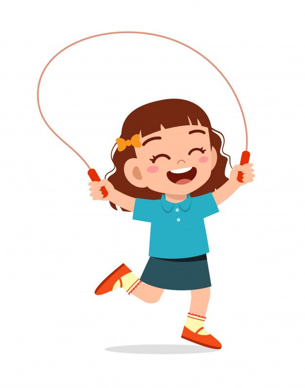
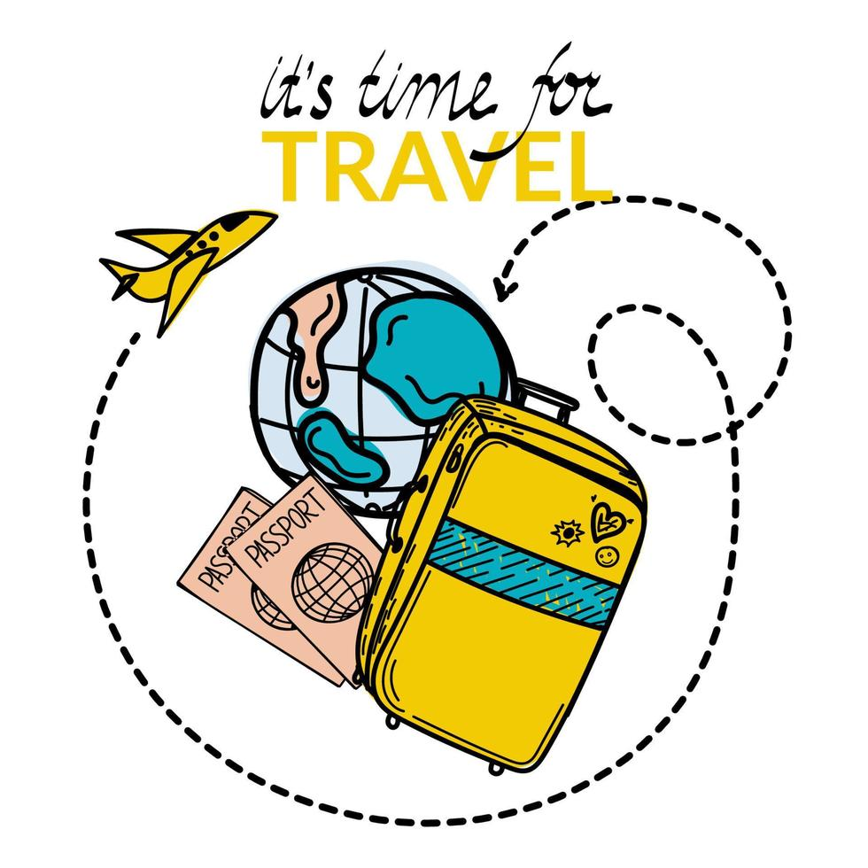

Proyecto de Vida
Metas a corto plazo

Primero:
Mi meta a corto plazo es encontrar y comprometerme con una actividad física que me apasione y que me ayude a mejorar mi salud general. Estoy decidido/a a explorar diversas opciones, como yoga, natación, senderismo o baile, hasta encontrar la actividad que realmente disfrute. Una vez identificada, me comprometeré a practicarla regularmente, estableciendo un plan de ejercicio semanal y adoptando hábitos saludables que fortalezcan mi bienestar físico y mental. Mi objetivo es no solo mejorar mi condición física, sino también disfrutar del proceso y mantenerme motivado/a en este camino hacia una vida más activa y saludable.
Segundo:
Aumentar mi hábito de lectura, dedicando tiempo regularmente a disfrutar de libros que realmente me interesen. Para lograrlo, estableceré un objetivo concreto de cuántos libros quiero leer en un período determinado, lo que podría incluir un libro por semana o por mes, dependiendo de mis compromisos y disponibilidad de tiempo. Además, identificaré géneros literarios y temas que me resulten especialmente atractivos para asegurarme de seleccionar lecturas que me mantengan comprometido/a e involucrado/a. Asimismo, crearé un espacio dedicado para la lectura en mi rutina diaria, ya sea al principio o al final del día, y reduciré el tiempo dedicado a otras actividades menos prioritarias. Mi objetivo es no solo aumentar el número de libros leídos, sino también disfrutar del proceso de explorar nuevos mundos, ideas y conocimientos a través de la lectura.

Tercero:
Organizar un viaje en familia a un destino emocionante y significativo. Para lograrlo, estableceré un plan detallado que incluya la elección del destino, la búsqueda de opciones de alojamiento y transporte, así como la estimación de costos y la definición de fechas tentativas. Me comprometeré a reservar tiempo en mi agenda y coordinar con los miembros de mi familia para asegurarnos de que todos estén disponibles y entusiasmados con la idea del viaje. Además, asignaré responsabilidades específicas a cada miembro de la familia para facilitar la planificación y la ejecución del viaje. Mi objetivo es crear recuerdos duraderos y fortalecer los lazos familiares a través de esta experiencia compartida, y estoy decidido/a a hacer todo lo necesario para que este viaje sea una realidad en el corto plazo.
Cuarto:
Asegurar mi éxito académico al pasar exitosamente mi año escolar y graduarme del colegio. Para lograr este objetivo, me comprometo a dedicar tiempo y esfuerzo significativos a mis estudios, manteniendo un horario de estudio regular y priorizando mis responsabilidades académicas. Además, buscaré apoyo y orientación de mis profesores, tutores y compañeros de clase cuando lo necesite, y estaré abierto/a a aprender y mejorar continuamente. Además, identificaré y abordaré cualquier desafío o dificultad académica que pueda surgir, adoptando estrategias efectivas de estudio y gestión del tiempo. Al mismo tiempo, estaré atento/a a las oportunidades extracurriculares que puedan enriquecer mi experiencia educativa y prepararme para mi futura carrera. Mi objetivo final es graduarme del colegio con éxito para poder perseguir mi carrera soñada y construir un futuro académico y profesional prometedor.